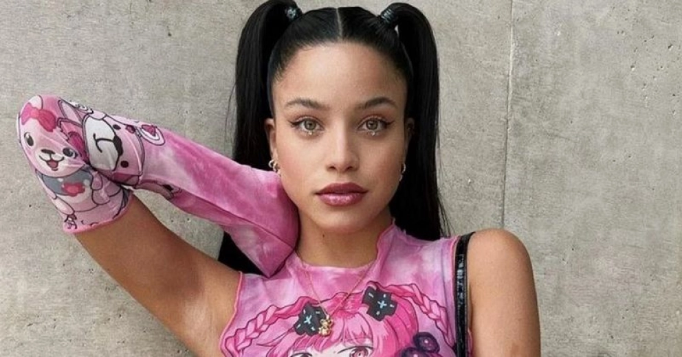
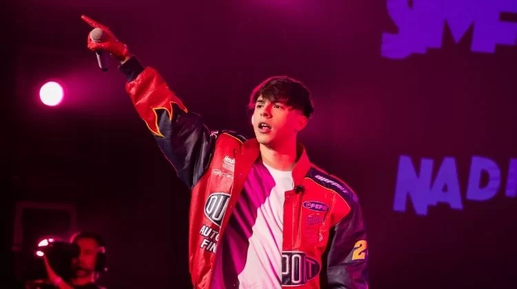
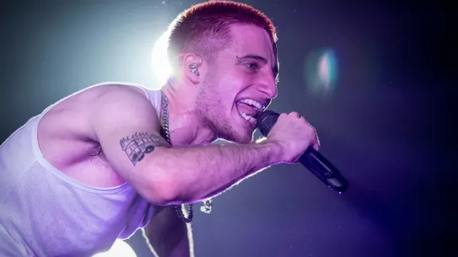

Lali Espósito
Mariana «Lali» Espósito (Buenos Aires; 10 de octubre de 1991) es una actriz, cantante y compositora argentina. Desde 2013, es cantante solista. Su primer tema, «A bailar», fue publicado a fines de ese año y el álbum homónimo, en 2014. Le siguieron Soy (2016), Brava (2018), Libra (2020) y Lali (2023). Mira su último videoclips:
Video Obsesion

Emilia
María Emilia Mernes Rueda (Nogoyá, Entre Ríos; 29 de octubre de 1996), conocida como Emilia Mernes o simplemente Emilia, es una cantante, compositora, modelo y actriz argentina. Se hizo conocida por haber formado parte del grupo uruguayo Rombai. En 2019 comenzó su carrera de solista. No te pierdas el tema que compartio con Miranda!! Miralo aquí:
Video uno de los dos

Rusherking
Thomas Nicolás Tobar (Santiago del Estero, 20 de mayo de 2000) más conocido por su nombre artístico Rusherking, es un rapero, cantante y compositor argentino, que adquirió reconocimiento tras el lanzamiento del remix «Además de mí», con el cual alcanzó el primer puesto en la lista Argentina Hot 100 publicada por la revista Billboard y recibió la certificación de triple disco de platino en Argentina. Fue furor su romance con la actriz China Suarez; a poco de separase, nos dejaron un video increible, miralo aquí!
Hipnotizados

Wos
Valentín Oliva (Buenos Aires, 23 de enero de 1998), conocido artísticamente como Wos (estilizado como WOS o WOS DS3), es un freestyler, rapero, cantante, músico y actor argentino. Revive el tema del momento:
Video Arrancamelo